Probing
Probe Basic has a number of included probing routines.
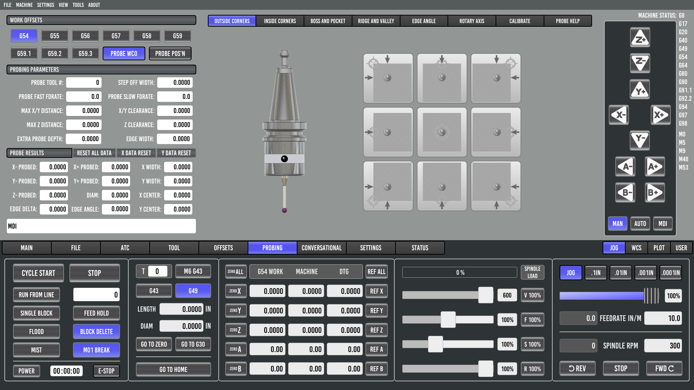Probing Setup
To begin probing, you first need to make sure you have connected
motion.probe-inputin your HAL file.Next, add an entry in your Tool Table for the probe, including the tip diameter. The default recommended tool number is 99. (Finding the probe tool length offset will be covered below)
Enter the Probing Parameters on the Probing Page. A description for these can be found on the probing help tab or below in the docs.
Setting the touch probe tool length offset. The way I prefer to find the touch probe tool length offset is as follows:
Use a facemill and measure the tool length of the facemill either by the tool setter or with a manual tool setter.
Once the facemill tool data is measured, entered, and stored in the tool table, load it in the spindle with the LOAD TOOL feature on the tooling page.
Mount a piece of scrap stock in the machine vise or on the table where it can be faced.
Face the stock to have a true flat surface. Do not move the z axis once faced.
Press the ZERO Z button in the DRO section of the interface. This will record the z work offset with the facemill’s tool length offset applied. Move the spindle to a safe distance to remove the tool.
Use the UNLOAD SPINDLE button on the tooling page and remove the facemill from the spindle.
Load the probe tool in the spindle. Make sure the tool length offset in the tool table is set to 0.0000.
Ensure all of the probe parameters have been set correctly, and move the probe over the faced surface of the stock.
Use the “PROBE POSITION ONLY” button on the probe page. This will find the surface without resetting the offset.
Press the Probe Z button on the probing page to probe the faced surface of the stock. The probed result for Z- PROBED will be the tool length offset for the touch probe. The number used will be absolute, no +/- sign entered as all tool length offsets are relative to the spindle nose gage line.
Enter the absolute value in the probe tool length offset in the tool table, save and reload the tool table.
Verify the tool length offset is correct by loading the probe tool using the LOAD SPINDLE button and probing the face of the stock again.
The Z- PROBED result should show a probed position of 0.0000. This verifies that the probed surface from the facemill and the probed point are the same with tool length offsets applied, which is what we want.
Now that the probe has been set up in software and in the tool table, we need to calibrate it for the most accurate results. This will be covered in the calibration section below.
Calibrating your Touch Probe
Probe Basic has a built-in probe calibration feature function which makes the calibration and calculations painless. Requirements are a precision gage pin or gage ring of known size mounted securely to the table.
The software calibration assumes that you have mechanically zeroed the probe’s stylus tip in the spindle and it has a TIR that meets your tolerance requirements. Ideally, 0.0000 TIR is the goal, but this may not always be possible.
As most probes require a small deflection of the tip before tripping, PROBE CALIBRATION OFFSET is used to account for this and can be set using these calibration routines and an accurately measured standard gauge.
Tip
Calibration video from Lcvette https://youtu.be/Qr9L6dyXf2A
Select the CALIBRATE tab in Probe Basic.
Enter the gage ring or gauge pin diameter in the CALIBRATION DIAMETER dialog box.
Move the probe over the gage pin or gage ring as shown in the probe button graphic for which type is being used. The starting position for the probe routine should match the pink tip in the graphic. The probe should be slightly above the gage object as a z minus move is the first move.
Select the appropriate probing button that corresponds to your gage ring or pin and press it.
The probe routine should complete and afterwards will populate the PROBE CALIBRATION OFFSET box. This value will be used to account for the probe’s trigger distance.
Important notes: the probe feedrates will directly affect the trigger distance and the same feedrates used during calibration should be used in all subsequent probing.
Move the probe to the previous starting position, and press the PROBE POSITION ONLY button.
Select the BOSS AND POCKET probe tab.
Select the same probe routine type for boss or pocket that was used in the calibration routine, and press it.
The results should show a diameter that now matches the gage ring or within the tolerance that the machine is capable of probing.
If the results do not match the gage ring known diameter, you can verify the stylus ball diameter is correct in the tool table, and try changing the speeds at which you probe. Then rerun the calibration routine above until your results are acceptable for your needs.
Work Offsets
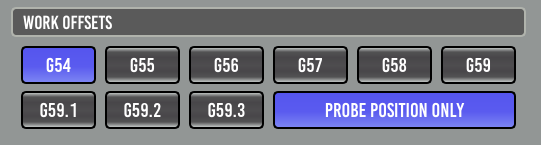This area allows you to select a Workpiece Coordinate Offset (WCO) and if it is to be updated as a result of probing.
- G5x:
Set the active Workpiece Coordinate Offset, which may be updated.
- PROBE POSITION ONLY:
This button when active (BLUE) will NOT set the currently active work offset to zero when a probe event occurs. It will record the probed positions and calculate Diameter, and X Y probe widths along with the Z position probed. This is useful for measuring or reverse engineering objects by using the probe tool.
When not active, all probe events will set the currently active work offset to zero for each probed axis position recorded. The inactive mode should be used for setting work coordinates to zero for stock or part programs.
Parameters

- PROBE TOOL#:
This should be set to match the probe entry in your tool table.
- STEP OFF WIDTH:
How far the probe will travel in either X or Y before moving down a side.
- PROBE FAST FDRATE:
Fast feed rate, for first touch when probing.
- PROBE SLOW FDRATE:
Slow feed rate for second touch when probing. If set to 0 (zero) a second touch will not be performed and the result from the fast probe is used.
- PROBE TRAVERSE FDRATE:
This is the speed at which non-probing motion will move at such as traversing the top of a workpiece or repositioning for a subsequent probe event.
- MAX X/Y DISTANCE:
Maximum distance to travel in either X or Y before tripping out.
- X/Y CLEARANCE:
Retract distance for X and Y probing after touch, this should be at least larger than any backlash in the axis.
- MAX Z DISTANCE:
Maximum distance to travel in Z before tripping out.
- Z CLEARANCE:
Retract distance for Z probing after touch, this should be at least larger than any backlash in the axis.
- EXTRA PROBE DEPTH:
Extra distance to move down a side (after probe diameter) before probing in X or Y.
- EDGE WIDTH:
Distance between test points when probing for Edge Angle’s.
Probe Results

This shows the results from the last probing run. There are reset buttons to clear the data if needed.
Probing Routines
The purple dot in each button shows the position at which your probe tip should be approximately placed before starting the probe run. The Z height above the workpiece should be no more than your “MAX Z DISTANCE” parameter.
Outside Corners

Inside Corners and Straight probes
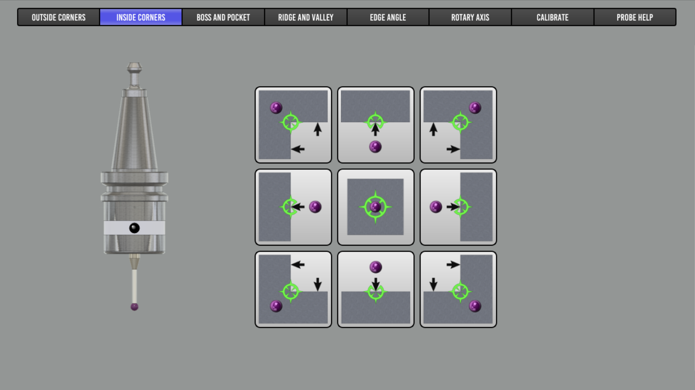
Boss and Pocket
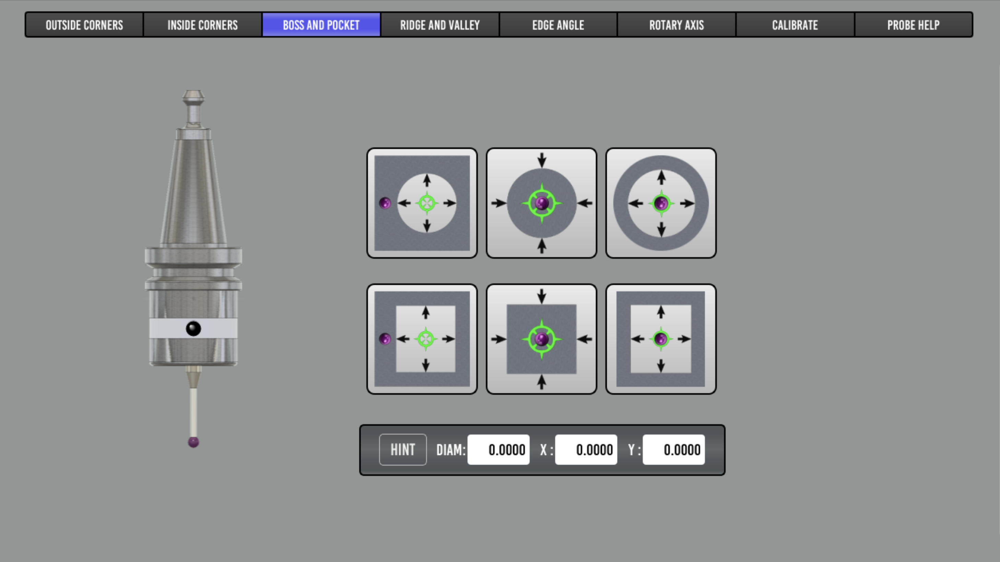
Ridge and Valley

Edge Angle
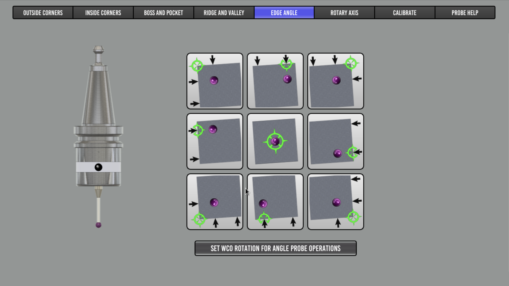
Rotary Axis
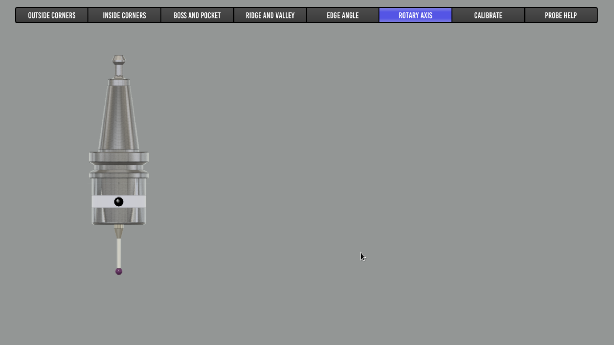
Calibrate

Help Tab
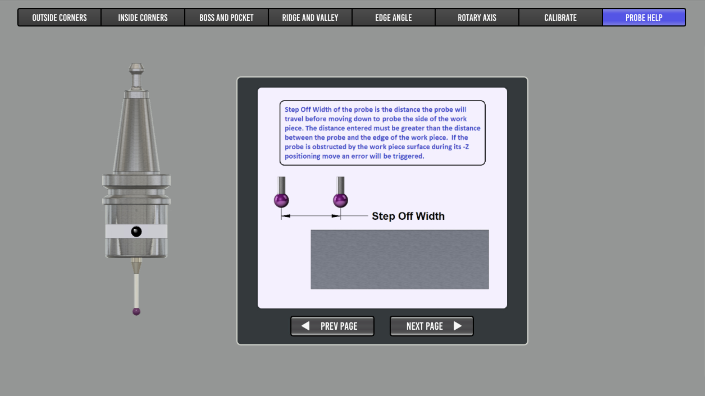Included here for offline reference, though a running PB instance may have more up-to-date help.
Step Off Width

Extra Probing DEPTH

Max Z Distance
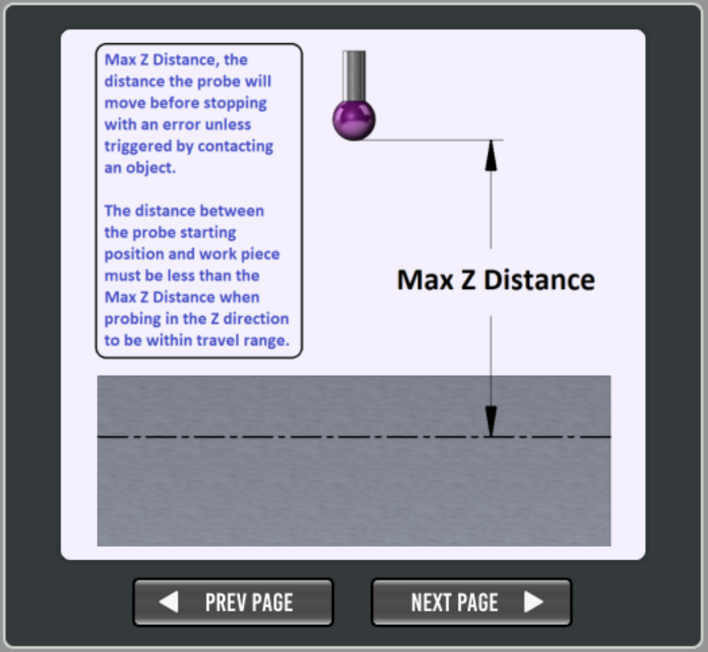
Max X/Y Distance

Z Clearance
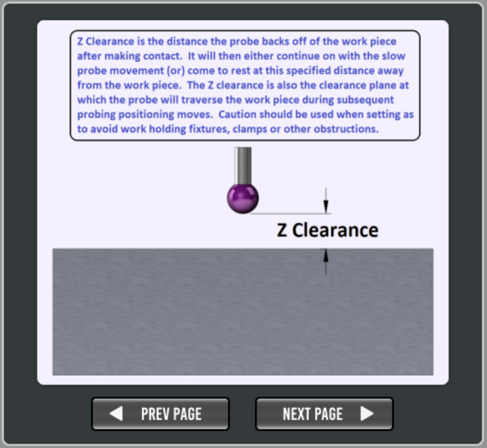
XY Clearance
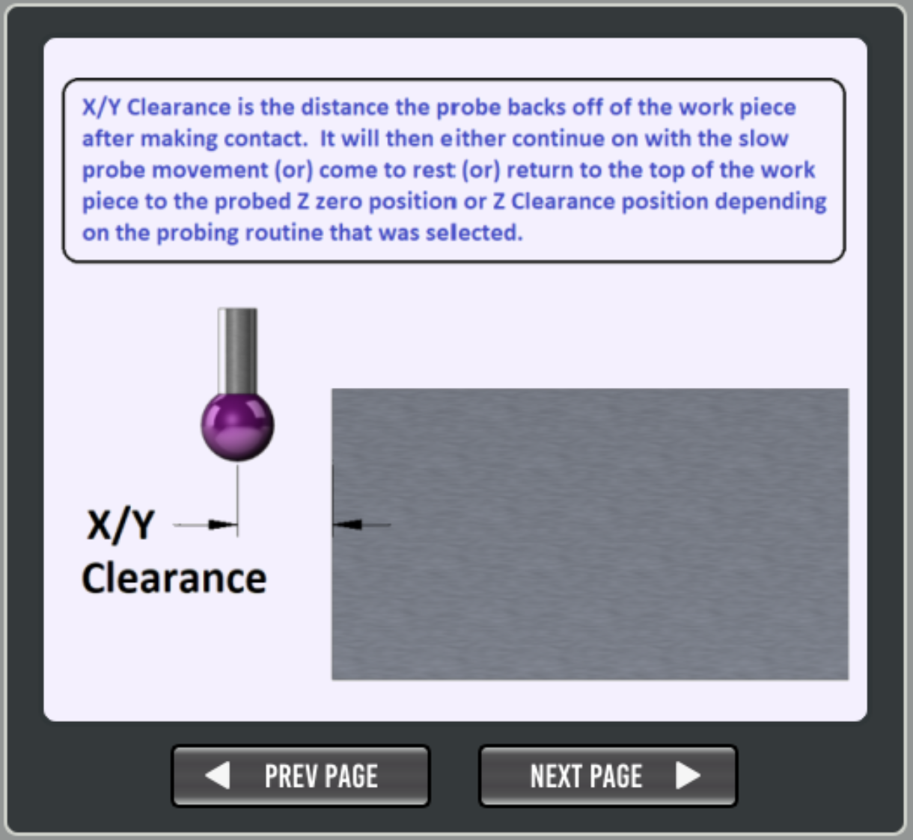
Hints for Probe Routines
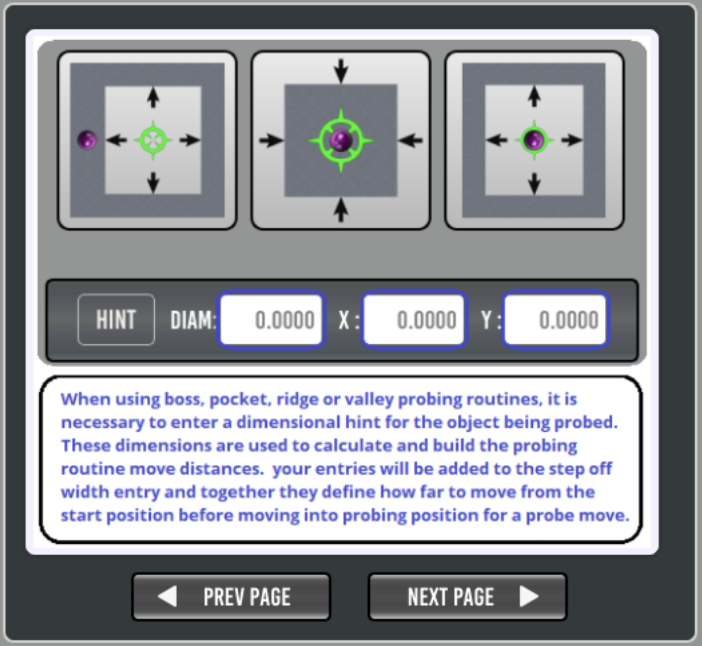